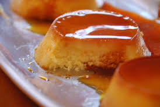

Ingredientes:
- 1 taza de leche de coco
- 1 taza de leche evaporada
- 1 taza de leche condensada
- 4 huevos
- ½ taza de azúcar
- 1 cucharadita de esencia de vainilla
- ¼ taza de coco rallado
Preparación:
- Precalienta el horno a 180°C.
- Carameliza el azúcar en un molde y deja enfriar.
- Licúa las leches, los huevos, la vainilla y el coco rallado hasta obtener una mezcla homogénea.
- Vierte la mezcla en el molde con caramelo.
- Hornea a baño maría durante 50 minutos.
- Deja enfriar, desmolda y disfruta tu flan de coco. 🥥